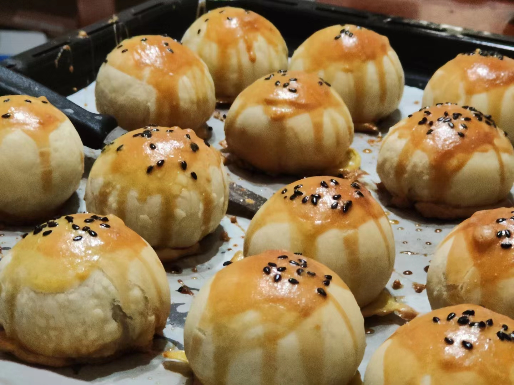
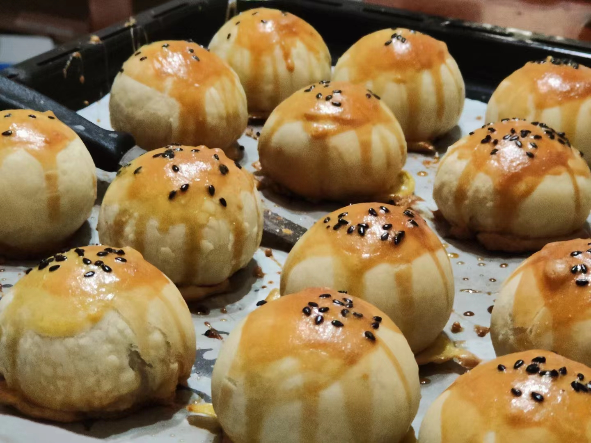
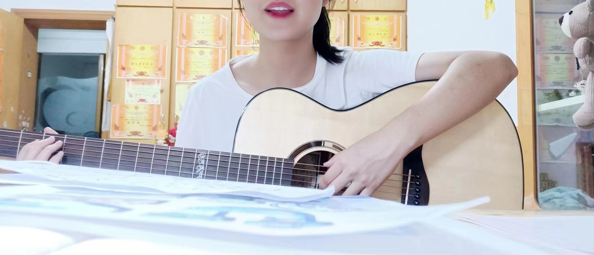
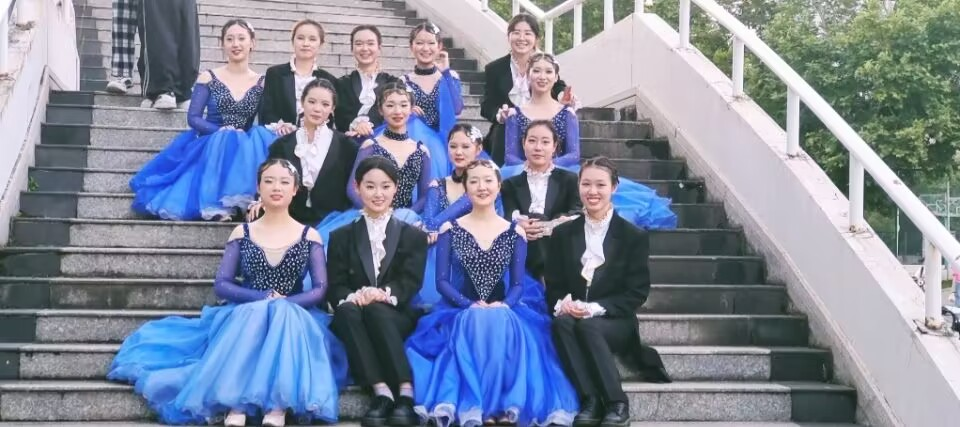
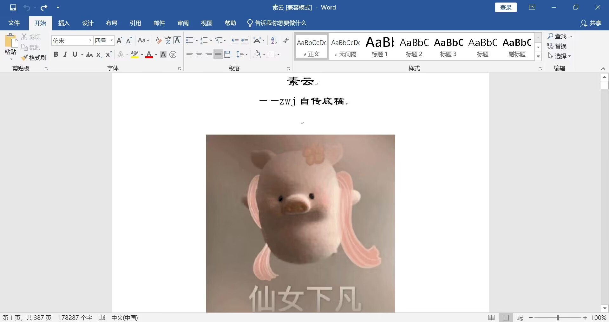
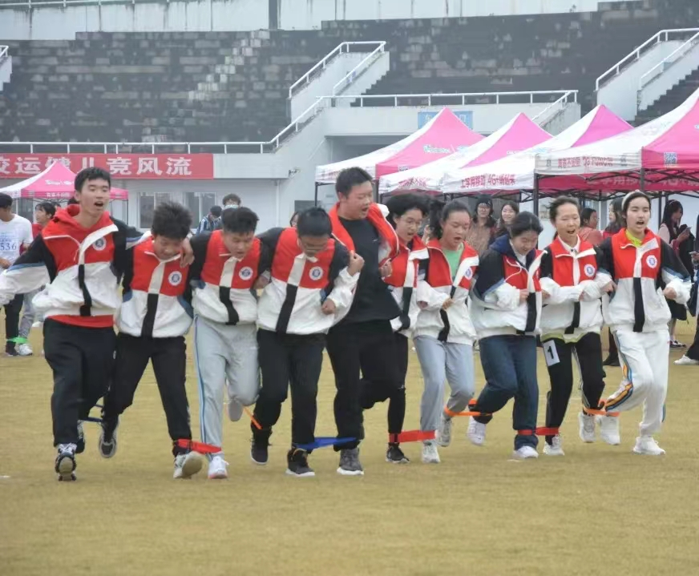

烘焙
在闲下来的下午茶时光里面，烹饪一杯自己喜欢的咖啡，烘焙一份香气的甜点。然后打开电脑或者笔记，把自己今日份的心得整理下来，活得有自己的热爱。
我有一些小特长!一起来看看吧~
在闲下来的下午茶时光里面，烹饪一杯自己喜欢的咖啡，烘焙一份香气的甜点。然后打开电脑或者笔记，把自己今日份的心得整理下来，活得有自己的热爱。
夏天+草地+星空+乐队+你我他=?
当来自南湖的微风拂过环湖操场，当吉他的琴声和鼓点开始碰撞，你是否会记得年少时刻的美丽邂逅。
"我们会走路就应该会跳舞。"
我们已然长大，有了所谓曾经，也有了故事可讲。铺开一纸散笺，书写一段从前，在缀满石榴花的巷口。
时间和文字厮磨，这里的一字一句，我的年复一年。容颜会老去，四季会不停。那些散碎在笔尖的光阴，寂静欢喜。
我始终相信,文字对情绪的传递是其他任何载体所不能比拟的。时代的洪流把人类对文字的敏感度冲得稀碎。 人类要往高处去，要不断冲破,要达到理性最顶峰，人类渴望光样的速度发展，而文字不那么需要。相反，它需要慢下来，替人类留住一些东西，比如眼泪，比如原始本能，比如我们的痛苦和瑕疵，或者别的什么。文学稀释人的复杂，抵达天真。
你要留点精力去读书去运动，去爱人，去奔赴你想要的生活。
吴耕民曾说：“要成为德、智、体兼优的劳动者，锻炼身体极为重要。 身体健康是求学和将来工作之本。运动能治百病，能使人身体健康，头脑敏捷，对学习有促进作用。”